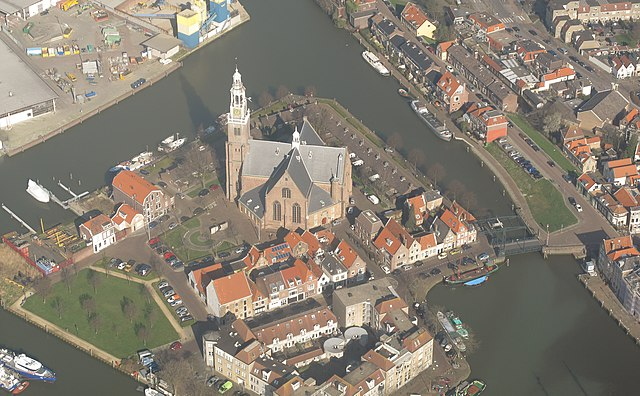
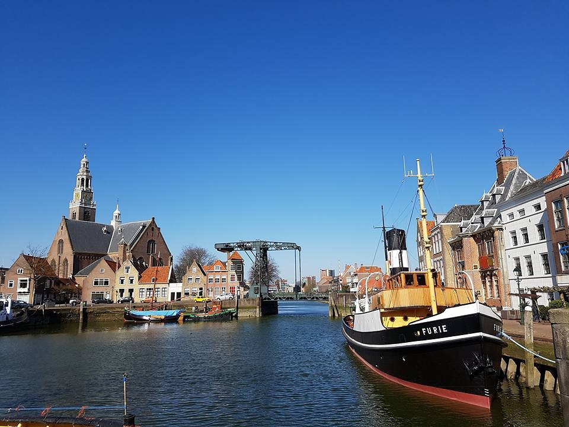

Maassluis

Maassluis is een stad en gemeente in de Nederlandse provincie Zuid-Holland. De gemeente heeft een oppervlakte van 10,12 km² (waarvan 1,63 km² water)
en telt 34.328 inwoners (31 januari 2022) die Maassluizers worden genoemd. Binnen de gemeentegrenzen liggen geen andere kernen.
In de jaren tachtig werd als stadspromotie de leus Maassluis, Eerste stad aan de Waterweg bedacht. Dit etiket is echter topografisch onjuist:
Maassluis ligt niet aan de Nieuwe Waterweg, maar aan het Scheur. Sinds 2010 is de slogan Ervaar Maassluis. De gemeente maakt deel uit van het samenwerkingsverband Metropoolregio Rotterdam Den Haag.
Geschiedenis

Maassluis is rond 1340 ontstaan als nederzetting bij een sluis in een zeewering. Die werd tussen de Noordzee en Rotterdam aangelegd om overstromingen te voorkomen.
De nederzetting, die bestuurlijk onder Maesland viel, werd Maeslandsluys genoemd. De nederzetting werd in 1489 geplunderd.
In de zestiende eeuw liet Marnix van St. Aldegonde een schans aanleggen. Nog voor de voltooiing werd de schans in 1573 veroverd door de Spanjaarden.
Van Aldegonde werd gevangengenomen. Een jaar later werd Maeslandsluys door muitende Spaanse troepen geplunderd.
Op 16 mei 1614 werd Maeslandsluys zelfstandigheid verleend door de Staten van Holland. De nederzetting ging verder als Maassluis.
De afscheiding had te maken met de onvrede in Maassluis over de houding van het bestuur dat in Maasland was gevestigd.
Die onvrede bestond onder andere omtrent de hoge kosten die men moest betalen en het weinige dat daarvoor terugkwam. De schans werd in 1624 afgebroken,
om plaats te maken voor de Groote Kerk. Met de bouw daarvan werd begonnen in 1629. Die bouw lag vijf jaar stil, doordat kapers uit Duinkerke veel Maassluizer
vissersschepen veroverden en de bemanning overboord gooiden. In 1639 werd de Groote Kerk voltooid. Op 4 december 1732 werd het beroemde Garrelsorgel
in gebruik genomen. Dit orgel, in de periode 1730-1732 gebouwd door Rudolf Garrels, en was een geschenk van de Maassluise reder Govert van Wijn.
bron: Wikipedia